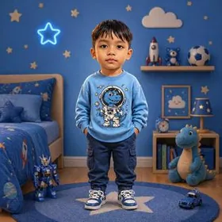

Pilihlah mata pelajaran di bawah untuk mulai berlatih soal kisi-kisi resmi Sumatif Tengah Semester (STS) Ganjil 2026/2027 SD Negeri 3 Kesiman. Kumpulkan seluruh bintang dan raih Nilai 100!
📅 SENIN, 12 OKT 2026Agama · Pancasila · B. Indonesia
|
📅 SELASA, 13 OKT 2026Seni Rupa · Matematika · B. Bali
|
📅 RABU, 14 OKT 2026B. Inggris · PJOK (Olahraga)
📚 8 Mata Pelajaran Sumatif Tengah Semester:
Tabungan Bintangmu: ⭐ 0
Matematika
20 Indikator Resmi
Bintang Mapel: ⭐ 0 / 20
📅 Jadwal Sumatif Tengah Semester (STS) Ganjil
Tahun Ajaran 2026/2027 · SD Negeri 3 Kesiman, Denpasar · Waktu: 07.30 – 10.15 WITA 👉 Ketuk nama mata pelajaran di bawah untuk langsung membuka latihannya!
Hari / Tanggal
Waktu
Mata Pelajaran
Senin, 12 Oktober 2026
07.30 – 08.15
🕉️ Agama & Budi Pekerti⭐ Drill Lengkap (500 Soal)
08.15 – 09.00
🦅 Pendidikan Pancasila✅ Kisi-Kisi Resmi (150 Drill)
09.30 – 10.15
🇮🇩 Bahasa Indonesia✅ Kisi-Kisi Resmi (200 Drill)
Selasa, 13 Oktober 2026
08.15 – 09.00
🎨 Seni Rupa✅ Kisi-Kisi Resmi (150 Drill)
09.30 – 10.15
🔢 Matematika✅ Kisi-Kisi Resmi (500 Drill)
10.15 – 10.45
🌺 Bahasa Bali⭐ Drill Lengkap (500 Soal)
Rabu, 14 Oktober 2026
07.30 – 08.45
🇬🇧 Bahasa Inggris⭐ Drill Lengkap (500 Soal)
08.45 – 10.15
🏃 PJOK (Olahraga)⭐ Drill Lengkap (500 Soal)
💡 Tips Sukses Ujian untuk Ana & Abhi:
1. Istirahat tidur cukup sebelum jam 20.30 malam.
2. Sarapan pagi yang sehat dan bawa air minum.
3. Siapkan pensil 2B, penghapus, dan penggaris sejak malam hari.
4. Berdoa sebelum mengerjakan soal dan periksa kembali sebelum dikumpulkan!
Siapa yang Sedang Belajar? 🌟
Pilih profil untuk menyimpan tabungan bintang & nilai rapormu:
Ana
Kakak Ana · Kelas 1 SD

Abhi
Adik Abhi · Kelas 1 SD
📲 Cara Memasang di Layar Utama Tablet
🤖 Di Tablet Android (Google Chrome):
1. Ketuk tombol Menu Titik Tiga (⋮) di pojok kanan atas browser.
2. Pilih "Tambahkan ke Layar Utama" atau "Instal Aplikasi".
3. Ikon UTS Ganjil 2026 akan muncul di beranda tablet anak!
🍎 Di iPad (Apple Safari):
1. Ketuk tombol Bagikan (Share / ⎋ kotak panah ke atas) di atas Safari.
2. Gulir ke bawah, pilih "Tambah ke Layar Utama" (➕ Add to Home Screen).
3. Ketuk "Tambah" di pojok kanan atas. Aplikasi siap dibuka layar penuh!